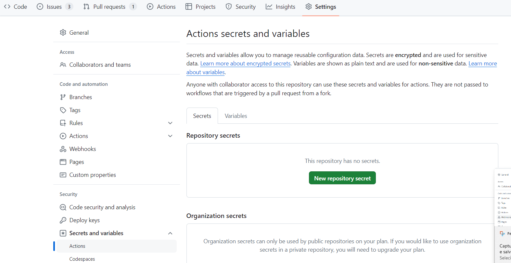
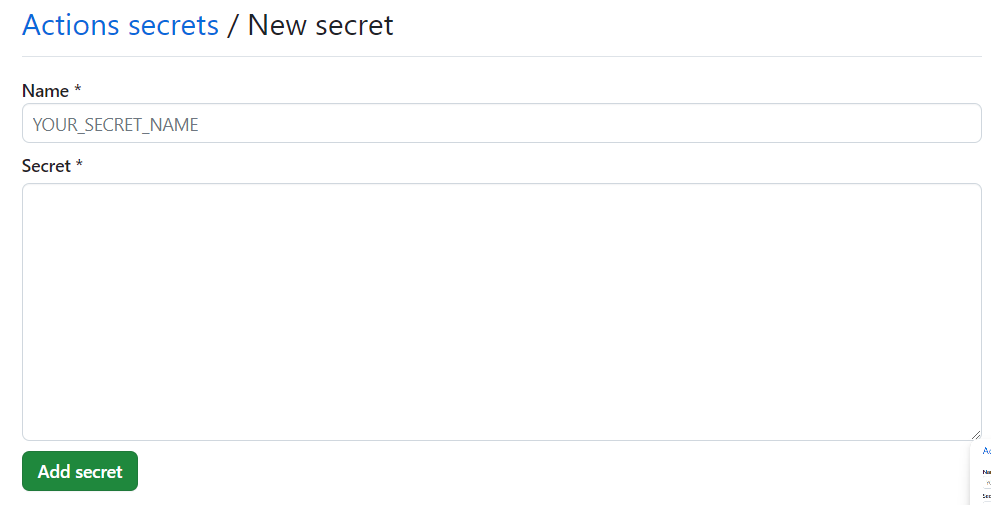

Autenticação no Sharepoint 365 para extração de dados
Alguns projetos como o obz-dados e dados-pptx-cofin precisam de realizar download de arquivos armazenados no sharepoint SPLOR durante a execução da etapa de extração.
Para tal, utilizamos o pacote microsoft365R nos scripts que realizam a extração. Esse pacote obtém acesso ao sharepoint corporativo por meio de autenticação via browser com uma conta de usuário que possua as permissões necessárias. O pacote obtém dessa forma um token de autenticação e o armazena localmente na máquina do usuário.
Outros projetos podem possuir uma rotina de execução agendada da etapa de extração de dados via Github Actions, e tal forma de autenticação via browser não funciona nesse contexto. Todavia, como um token de autenticação é obtido e armazenado pelo Microsoft365R , esse mesmo token pode ser encriptado e inserido no scripts do Github actions para que esse consiga autenticação.
Esse processo consiste em:
- Obter o arquivo contendo o token por meio do pacote Microsoft365R (somente necessário caso já não exista o token no repositório do projeto);
- Gerar uma chave privada e e anotá-la;
- Encriptar o token com essa chave privada e salvá-lo no diretório do projeto (e.g.
ms365.rds); - Adicionar a chave privada nas configurações de secret do Github actions (e.g.
MS365_key); - Recuperar a chave privada por meio das opções de secrets do Gitub Actions e utilizá-la para descriptografar o token
- Utilizar o token nos scripts do projeto para autenticar no sharepoint e obter acesso aos recursos, como arquivos e pastas.
Com esse par de informação, chave privada e token, o script de extração consegue fazer autenticação e download dos arquivos.
Criação do token ms365.rds
Caso você não possua um token válido localmente, siga os passos descritos aqui para obter um token novo. O pacote Microsoft365R por padrão C:\Users\<user>\AppData\Local\AzureR\ no Windows e "~/Library/Application Support/AzureR/ no Mac. O arquivo contendo o token tem um nome alfa-númerico como algo semelhante a 0aaccf80a2c4a936420c1426459dgb3cc.
Note
Se você está criando um novo repositório anual a partir de um repositório upstream é provável que o token ms365.rds já esteja criado e armazenado (criptografado) no repositório.
Na pasta do projeto execute no console do R:
library(cyphr)
# gerar chave aleatória
k <- sodium::keygen()
# encriptar token utilizando a chave aletarória
key <- cyphr::key_sodium(k)
cyphr::encrypt_file("C:/Users/<user>/AppData/Local/AzureR/aaccf80a2c4a938420c1426459dfb3cc", key, "ms365r.rds") # <user> sendo o nome de usuário no Windows.
k_str <- sodium::bin2hex(k) # anote/guarde essa string
As funções sodium::keygen() e cyphr::key_sodium(k) são usadas para gerar uma chave aleatória que pode ser usada como chave de criptografia. A chave é gerada como um arquivo binário, portanto para que possa ser inserida como secret no Github actions é necessário transformá-la para a string equivalente por meio da função sodium::bin2hex(k).
Essa string precisa estar disponível como uma variável de ambiente MS365_KEY no seu ambiente de desenvolvimento local para descriptografar o token e no Github Actions para que o token armazenado no arquivo ms365.rds possa ser descriptografado.
Como o token fica exposto no Github ele deve ser criptografado com a chave gerada e será descriptografado posteriormente para autenticação no sharepoint durante a execução do Actions. Dessa forma o processo pode ocorrer no Github actions sem expor o token de autenticação publicamente.
Recuperação do Token criptografado
Após o token ser disponibilizado como um arquivo .rds criptografado, para utilizá-lo execute o seguinte script R:
# decriptar token criptografado
k_env <- Sys.getenv("MS365_KEY") # obtém a string da chave privada que foi armazenada como variável de ambiente
key <- cyphr::key_sodium(sodium::hex2bin(k_env)) # converte a chave privada de string para binário
token = cyphr::decrypt(readRDS("ms365r.rds"), key) # le e descriptografa o arquivo do token
Dessa forma o token pode ser utilizado para autenticação e obter os arquivos
Disponibilização da chave privada MS36_KEY para o Github Actions
No nosso plano atual do Github para a organização splor-mg "organization secrets and variables cannot be used by private repositories".
Portanto é necessário criar o segredo MS365_KEY em cada repositório que precisa de realizar extração.
Nas configurações do repositório (Settings), selecione "Secrets and Variables" e "actions":

Insira um novo segredo MS36_KEY e a string da chave privada anotada:

Nota: Se você gerar outra chave privada e criptografar o arquivo com essa nova chave, naturalmente a chave anterior não funcionará para descriptografar o arquivo do token.
Importante lembrar que a variável de ambiente MS365_KEY deve estar disponível dentro do container, no workflow do Github Actions do projeto você pode fazer isso com:
- name: ETL pipeline
env:
MS365_KEY: ${{ secrets.MS365_KEY }}
run: docker run -e MS365_KEY=$MS365_KEY --rm --mount type=bind,source=${PWD},target=/project fjuniorr/${{ github.event.repository.name }} make all
Utilização do Token para acesso ao Sharepoint
Após todo o processo descrito até aqui, o token pode ser utilizado para autenticação e acesso a recursos no sharepoint, como no script R exemplo a seguir:
library(Microsoft365R)
library(cyphr)
k_env <- Sys.getenv("MS365_KEY") # Chave privada obtido via secret vindo do Gitgub Actions
# decriptar token
key <- cyphr::key_sodium(sodium::hex2bin(k_str))
token <- cyphr::decrypt(readRDS("ms365r.rds"), key)
# utilizar token descriptado
site <- get_sharepoint_site(site_url = "https://cecad365.sharepoint.com/sites/Splor/", token = token)
print(site$get_drive()$list_items())